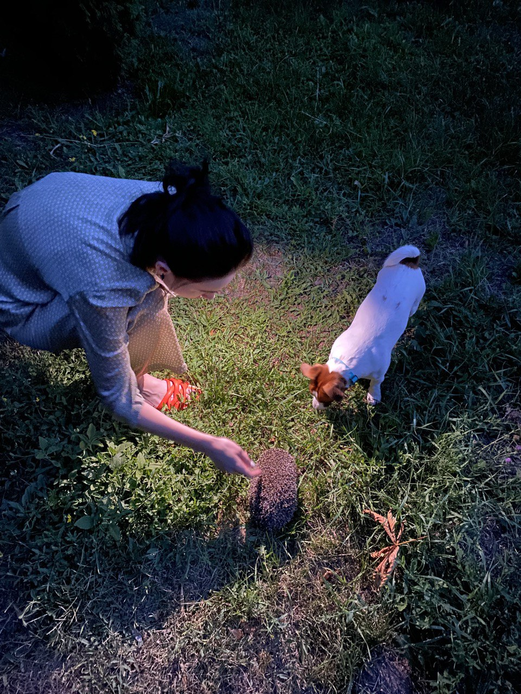

Вступ
Десь за горами, за лісами, не знати в якій державі жив раз один цар. Старий уже був. Держава велика, а наслідника нема. Тільки одна донька.
Підросла дівка, вже на одданні, і цар почав думати, як би дочку видати заміж, зняти клопіт із старечих плечей: керувати на старість державою — то не легка справа!
Дав по всіх сусідніх краях знати, аби приїздили до нього сватачі. Який хлопець полюбиться доньці, той візьме її за жінку. Як це оголосили, з усіх сторін світу почали сходитися герцоги, барони та і прості хлопці, хто дуже красивий був.
Кожний хотів статися царем і взяти собі красуню за жінку.
Айбо дівка подивилася на одного, на другого, на третього. Не сподобалися їй. І сказала батькові, що немає дяки віддаватися.
Цар розсердився
— Донько, подумай добре! Я вже старий. Час мені на відпочинок.
Але дівка мудрує.
Був у царя чудовий сад навколо палацу, такий прекрасний, що подібного на цілому світі не було. Які лише на світі ростуть — у теплих, гарячих краях — квіти і дерева, такі там були. А серед того саду росло дерево вже таке високе, що верху його ніхто не міг бачити. Цим деревом-чудом дуже пишався цар.
Одного разу, коли доньці уже надокучило слухати докори за одруження, вона вийшла в сад. Сонечко гріло. День був ясний, теплий.
Ходить дівчина межи квітами й бесідує з ними:
— Не бійтеся, квітоньки, не лишу я вас, хоч як нянько буде намагатися видати мене за якогось далекого принца.
Та одного ясного дня зібралася хмара, загриміло, заблискало й затемнілося... Випав страшний град. Тривало це недовго. Знову небо прояснилося і почало сонечко світити.
Але сад був чорний од спустошення: всі квіти поламані, листя з дерев збите... І все геть посохло, як би гарячою водою було спарене.
Вийшов цар з палацу і не впізнав саду. Постарів, але такого ніколи не бачив, ніде ні квітки, ні листка. Аж плакати хочеться. Кличе доньку. А вона не озивається. Шукав, шукав — не знайшов. Кличе слуг. Ті бігають, питають... Нема!
Зникла
Злякався цар. Послав вісті, куди лише міг. Потім надіслав своїх гінців у чужі держави й пообіцяв тому, хто знайде доньку, ціле своє царство.
Тисячі людей шукали царівну, але та пропала, наче земля її проковтнула.
Дуже журиться цар. Одна в нього була дочка і зникла. Ніщо йому не миле. З великого жалю захворів.
Ходять до нього лікарі, та задар: хирів і хирів.
Раз задрімав цар у саду, й приснилося йому, що того дня, коли страшна буря пройшла серед дня, у хмарі був семиголовий змій. Він ухопив його доньку й поніс на верх високого дерева. А на тому дереві стоїть зміїв палац, у ньому полонянка...
Пробудився цар і думає собі:
«Сон сном, але може бути й правда. Бо того дня справді моя донька пропала. Ану, спробуймо!»
І дав знати по усіх державах, що якби знайшовся такий витязь, котрий вилізе на височезне, аж до неба, дерево й визволить його доньку, то віддасть її за нього заміж і всі володіння передасть йому.
Ой, як почули це молоді люди, почали сходитися із цілого світу до царського двору: герцоги, барони, графи, навіть гарно вбрані циганські легені... Котрий себе хоч трохи вважав лазієм, кожний голосився у царя, бо кожний мав охоту стати його наслідником. Лізли — одні вгору, інші вниз. Декотрі піднялися так високо, що ледве їх уже було видно, але далі не могли і злазили.
Так тривало день, другий, третій... Далі — тиждень, два... Успіху ніякого!
Та був у царя один свинарчук — колись давно королі й царі мали стада всякої худоби. Дивився, дивився, як пани намагаються вилізти на дерево, й думає собі:
«Гей, коби цар дозволив мені, приніс би я од змія його дівку!»
Й не перестав думати про це, коли доглядав стадо. Навіть якось проговорив уголос:
— Гей, коби цар дозволив мені!
Пастух
А стара свиня-льоха почула ці слова, підійшла до нього, почухалася й каже:
— Газдо, спіши до царя й проси дозволу лізти. Ти вилізеш на високе дерево і визволиш дівку. Я тебе добре
знаю. Сю пораду даю через те, що ти нас чествував. Най цар заріже старого безрогого буйвола, най з нього
злуплять шкіру, а з тої шкіри най накаже пошити для тебе три кожухи.
Іван послухав стару льоху й пішов до царя. Той сидів зажурений в саду,
дарма його смішив придворний блазень.
— Чого, Іване, ти прийшов?
— Пресвітлий царю! Бачу, тут багато лазунів. Дозвольте й мені лізти. Обіцяю, що приведу вам
принцезну-доньку.
Засміявся цар, хоч невесело в нього на душі:
— Тобі, Іване, на дерево лізти? Ліпше приголосися цьому дурневі за помічника. Дурна твоя бесіда!
Розсердився хлопець:
— Пресвітлий царю, дозвольте мені лізти! Тоді цар питає свого блазня:
— Но, що ти скажеш на Йванову бесіду?
— Дайте мені Івана помічником, бо він ще дурніший, аніж я. Гірше розсердився легінь.
— Пресвітлий царю,— каже грізним голосом,— не слухайте дурного, бо з дурної дірки дурний вітер віє.
Накажіть
зарізати безрогого буйвола та із його шкіри пошити три кожухи. Й дозвольте мені лізти. Якщо вернуся без
принцезни, робіть з моєю головою, що захочете.
Дивиться цар на хлопця і думає: «Тут уже не фігля»,— і говорить.
— Добрі є. Буде, як ти хочеш. Заб'ємо буйвола. Але пам'ятай, що без моєї доньки щоб ти не вернувся! Як
не
приведеш її, упади із дерева і ліпше зломи собі голову. Бо коли сам не зломиш, то кат тобі
її відрубає.
Вернувся Іван до своїх свиней. А цар дав наказ зарізати буйвола й пошити з його шкіри хлопцеві кожухи.
Як
було готово, покликав Івана:
— Зробили по-твоєму. Візьми кожухи й можеш лізти. Або царство, або смерть!..
Іванові більше не треба казати. Одягнув один кожух, а інші два прив'язав на плечі. Узяв сокиру і пішов під дерево. Людей — страх! Усі чекають...
Іван оглянув дерево і затяв сокиру. Став на сокиру, потім вийняв і затяв над головою: так піднімався все вище і вище. Скоро зник з очей.
Змій
Цілий день ліз, а понад вечір вже кожуха на грудях порвав. А лізти ще високо. Одяг на себе другий кожух — знову лізе, лізе... Та через день подерся і той.
— Но, кожуше,— каже третьому, коли на себе одягнув,— хоч доти держи, доки я до першої гілляки долізу.
І доліз до гілки, котра рівно вбік росла.
Хлопець сів на гілку і говорить сам собі: «Іване, вернися!» А другим голосом: «Іване, не вертайся, лізь сміливо далі!»
І доти доліз, що подерся і третій кожух: груди — у крові...
Не зважав на це Іван. Добрався вже до першого листя, зажмурив очі й каже:
— Но, світе, здоров був! Або виграю, або програю!
І з зажмуреними очима скочив на перший лист. Лиш простерся...
Розплющує очі, а тут такий світ, як і долі, звідки він прийшов: трава росте, поля, ліси, гори...
Йде, йде. Блудить. Нараз бачить: на горі палац обертається на качачій нозі.
Вдарив Іван сокирою в цю ногу, й палац зупинився. Навколо двері й брами нараз повідчинялися, і хлопець — шмиг! — у царський двір. В ту ж мить усі двері зачинилися, і палац знову крутиться.
Іде Іван, розглядається, а ніде нікого. Коли зайшов у палац, біжить до нього дівчина. Дивиться, а то
царська
дочка! Вона до нього:
— Ой Іванку, як ти сюди потрапив?
— Не питай нічого, збирайся до нянька, бо той вмирає за тобою.
Вона як це почула, то аж зблідла:
— Іване, не кажи такого, бо коли тебе почує змій, мій чоловік,— зразу кінець буде і мені, й тобі!..
Не встигла договорити, а змій уже тут: сім голів, і з кожної гортанки палахкотить полум'я, на сім метрів усе палить. Злякався Іван.
— Що се за творіння? — питає змій.— Відразу йому кінець. Дівчина осмілилася і заговорила:
— Се ж мій вірний слуга! Не може без мене і прийшов сюди, аби й тут мені служити!
Змій притих, та хмураво ще поглядає на Івана.
— Добре, не вб'ю тебе. Але задар хлібане будеш їсти. Йди за мною. Дам тобі роботу.
Кінь
Йде Іван за змієм. У кінці двору хлів. Змій відімкнув двері, а там на помості лежить кінь, бідний-пребідний: мухи бринять над ним, шкіра облізла. Не може встати, лише крекче.
— Видиш цього коня? Будеш його доглядати, годувати і поїти. Давай йому доста всього, але того не дай, що
буде
просити.
— Та як то все давати, а що просить — не дати?
— Я тобі сказав, а ти виконуй! І йде геть. Потім вернувся:
— Іване, міркуй! Якщо спробуєш мене обдурити, твоє життя кінчиться...
Почав Іван носити коневі їсти: доброго сіна, конюшини, вівса, ячменю. А кінь і в рот не бере. Лежить і голову не підводить. Іван пошкодував його, гладить і приговорює:
— Їж, конику, їж... Може, поздоровшаєш. Я тебе по-людському буду обслуговувати.
Кінь слухає, слухає і людським голосом озвався:
— Виджу, хлопче, ти доброго серця. Ай-бо
задар силуєш мене їсти сіно та овес. Се не моя їжа.
— А чим же тебе годувати?
— Я їм гарячу грань, а п'ю полум'я. Давай мені грань і напувай полум'ям, тоді буду здоровий.
— Але шаркань наказав того не давати, що будеш просити!
— Як ти слухатимеш змія, то не визволиш принцезну, бо я знаю, що ти би хотів її урятувати. А тут нема
нікого,
хто може змія знищити, лиш я. Через це він мене отак мучить, аби я загинув.
— Проси, конику, що хочеш! Все дам, аби визволив принцезну!
— Я від тебе багато не прошу. Лиш у неділю, коли шаркань полетить за гори, спали козел дров, а я грань
поїм. І
буде все гаразд. Та будемо діяти таємно.
Так і сталося. Коли була неділя, змій розпростав крила й полетів. Іванові тільки того й треба. Запалив дрова. Ще вони не догоріли, набрав лопату жару і поніс коневі. Кінь одним духом проковтнув і вже годен був підвести голову. Поніс Іван другу й третю лопату жару. Як це кінь з'їв, уже й на ноги встав.
Тоді Іван зняв з нього ланцюги. Кінь вибіг на двір, поковтав усе полум'я й поїв усю грань.
Іван приглядається: коник не простий! Шерсть золота, замість чотирьох у нього п'ять ніг, крила зверх лопаток стирчать.
— Но, Йване, виконав ти все, що я тобі казав. Починаймо діяти, доки шарканя не є. Йди у пивницю: там є сідло, шабля і вуздечка. Принеси на мене. Поспішай!
Пішов Іван. Шукає, шукає — бачить змієві бочки із вином. Намацав у потемку сідло, шаблю, вуздечку. Взяв і несе. Якраз вийшов з пивниці, а змій на дверях!..
— Що ти наробив, хлопче? Ти мене обдурив. Тепер пропадеш! Вихопив із рук Івана шаблю й хоче йому відрубати голову.
Кінець
Той просить:
— Відпусти мене, ніколи більше тебе не обдурю...
— Не відпущу, мусиш тут загинути. Ай-бо наперед вип'ємо вина за твої гріхи.
Завів Івана знову до пивниці, розбив бочку, налляв собі й хлопцеві по одному відрові. Змій п'є, а Йван
просить:
— Відпусти мене.
— Не відпущу. Тепер вип'ємо за мої гріхи.— І знову налляв собі відро вина. Далі — друге, третє,
четверте... Сім
відер вина випив! Сп'янів і розум стратив. Танцює, співає, ходить узад-уперед, крутиться. А тоді впав і
заснув
як мертвий.
Іван зрадів: узяв тихенько шаблю й хоче рубати змія. Але думає собі: «Одну голову відітну, а шість ще зостанеться. Змій прокинеться одразу і знищить мене!»
Вхопив сідло й вуздечку і побіг до татоша. Розповів, що сталося в пивниці.
— Дуже добре ти зробив, що не чіпав шарканя. Ти би його не вбив. Давай сюди сідло!
Кінь фукнув, і з сідла вся іржа пропала, а появилося дорогоцінне каміння.
— Сідлай мене й тікаймо! Осідлав Іван татоша.
— Но, куди йдемо?
— Не питай. Чимскоріше маємо вибратися звідси! Піднявся кінь. Летів, летів, і зрештою, у темному лісі
спустився
на землю.
— Но, Іване, тут, у цьому лісі, є дикий кабан. Уважай, бо дикуна мусимо забити. В його голові — живий
заєць, і
того треба вбити, а у зайця в голові діамантова шкатулка, і в тій шкатулці сім жуків. У тих жуках і є
сила
шарканя. Якщо їх вб'ємо, він утратить міць. Дивись, біжить на нас дикун...
Глянув Іван: дикун величезний, а ікли, як шаблі. Роззявив пащу й женеться на них... Кінь підхопився у повітря, й, коли п'ятою ногою вдарив кабана в голову, той лише простягся.
Іван шаблею розколов йому голову, а звідти нараз вихопився заєць. Іван на коня. Кінь наздогнав зайця й ногою вбив його.
Тоді Йван спокійно зліз із свого татоша, розтяв зайцеві голову й вийняв діамантову шкатулку. А в шкатулці жуки дзижчали, як мотор.
Іван розглянувся й побачив плескуватий камінь. Поклав шкатулку на той камінь, а другою брилою так гепнув, що із жуків і сліду не стало!
— Но, можемо спокійно вертатися,— каже йому кінь. Іван сів на коня й прилетів у палац.
Дивиться — серед двору змій ледве повзе, на ноги звестися не може. Коли Іван приступив до нього, той
жалісно
сказав:
— Гей, Іване, знищив ти мене, відібрав мою силу.
— Не лише силу, а й життя твоє візьму, й царівну заберу.
— Іване, все бери, що маю: золото, срібло, діаманти,— тільки життя мені лиши! Я ж тебе не вбив...
— Ні! Тут тобі смерть! — Ухопив шаблю й усі сім голів повідрубував. Змієва кров до колін на дворі
текла...
Іван зайшов у палац і каже принцезні:
— Можемо збиратися додому. Вільна путь!
Дівчина не вірить. Глянула через вікно, а надворі повно крові.
— Йой, Іванку, понеси мене до мого нянька!
— Понесу!
Дівчина бере свої речі, а Йван вийшов надвір, проходжується й думає: «Сюди я виліз. А як звідси вибратись? Може, мені самому вдалося би злізти, а з дівчиною...»
Сказав про це принцезні. Тепер обоє журяться, ходячи по дворі.
— Ліпше було б зі змієм помиритися,— каже дівчина. Ходять смутні. Нараз перед ними — дурк! — з'явився
кінь.
— Чого журишся, мій газдо?
— Тяжке діло вибратися звідси...
— Не журися! Готові обоє?
— Готові...
— Тоді сідайте на мене! Сіли на коня. Татош каже:
— Зажмуріться!
Зажмурили очі й лише чують, як гучить повітря. Летять кудись зі страшною швидкістю.
Через кілька хвилин кінь дубнув ногами, гейби на тверде скочив.
— Розплющіть очі й розгляньтеся...
Відкрили очі, бачать — вони у нянька серед двору! А тут багато людей. Всі засмучені.
— Що сталося?
— Цар на смерті!
Принцезна й Іван швидко побігли до палати. Цар лежить — одна нога в могилі...
А коли донька проговорила, старий, почувши її голос, нараз розплющив очі. Відразу схопився зі смертної постелі. Здоров'я повернулося, почав говорити. Коби була музика, то і танцював би! Аж помолодшав.
— Як ти тут опинилася?
Тоді дівчина розповіла нянькові про все, що трапилося. Цар вислухав і каже:
— Іванку, був час, що я тебе хотів призначити помічником дурня. Ай-бо межи нами була й така угода: як приведеш мою дочку, будеш моїм зятем. Даю за тебе єдину доньку і призначаю своїм наслідником.
Загнав за гудаками. З'явилися цигани, й почалася велика гостина.
Два тижні справляли молодим весілля. Цар прикликав не лише царедворців, але й весь народ. І криві, і сліпі гуляли, танцювали.
Іван перебрав царство і ще й тепер царює, як не вмер...